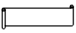
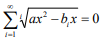

Lucrare practică editare text
PLOAIA ACIDĂ
Ploaia acidă este o formă de poluare atât a aerului cât şi a apei în care acizii din aer, produşi de uzine de producere a energiei electrice şi alte surse, cad pe Pamânt în diferite regiuni. Acţiunea corosiva a ploii acide provoacă pagube incomensurabile mediului inconjurător. Problema începe cu producerea dioxidului de sulf şi a oxizilor de azot produsi prin arderea combustibilului fosil (cărbune, gaz natural şi petrol). Dioxidul de sulf şi oxizii de azot reactionează cu apa, şi alte substanţe chimice din aer, pentru a forma acidul sulfuric, acidul azotic şi alţi poluanţi. Aceşti acizi poluanţi ajung pâna în atmosferă, unde călătoresc sute de kilometri, şi, în cele din urmă, se întorc pe pământ sub forma de ploaie, zăpadă sau ceaţă.
Urmări ale ploii acide pot fi observate mai ales în estul Americii de Nord, în Europa, în Japonia, China şi Sud-Estul Asiei. Ploaia acidă îndepărtează substanţele nutritive din pământ, încetineşte dezvoltarea copacilor şi transformă lacurile într-un mediu care nu poate întreţine viaţa. În orase, acizii poluanţi corodează aproape tot ce intră în contact cu ei, accelerând acest proces asupra structurilor cum ar fi blocuri şi statui. Acizii în combinaţie cu alte substanţe chimice formează praful de fum urban care atacă plamânii, cauzând boli şi decese premature.
- Deschideţi aplicaţia MicrosoftWord
- Introduceţi textul de mai sus text, Times New Roman, mărimea 12, spaţiu între linii 1,5
- După cuvântul petrol introduceţi un paragraf nou.
- Selectaţi tot textul şi modificaţi dimensiunea caracterelor la 14
- Folosiţi funcţia de desprţire în cuvinte pentru a separa cuvntul atmosfera
- Adăugaţi următorul comentariu după Ploaie acidă :”material preluat de pe internet”
- Selectaţi paragraful al doilea şi stabiliţi spaţierea între rânduri la 2 linii.
- Selectaţi textul “Acţiunea corosivă” şi scrieţi-l expandat la 2pt.
- Transformaţi literele cuvântului Japonia în majuscule.
- După paragraful doi introduceţi o întrerupere de pagină
- Creaţi paragrafe noi după: estul Americii de Nord, în Europa, în Japonia, China şi SudEstul Asiei.
- în dreptul paragrafelor noi formate adăugaţi marcatori
- Introduceţi în antet numele vostru şi clasa, iar la subsol numele şcolii
- Selectaţi titlul centraţi-l şi scrieţi-l cu aldin, dimensiune 20, Castellar, culoare mov, subliniat cu linie întreruptă, doar cuvintele, de culoare verde, introduceţi-l într-un chenar de culoare portocalie cu fond galben
- Schimbaţi orientarea paginii a doua în landscape
- Introduceţi următoarea formă

- În interiorul ei scrieţi numele vostru
- Umpleţi forma cu o culoare la alegere
- Cu ajutorul editorului de ecuaţii scrieţi următoarea relaţie matematică

- Salvaţi documentul cu numele vostru "Nume_Prenume_1.docx"
- Creaţi o felicitare de Crăciun, folosind imagini de pe internet
- Folosind Mail merge, adresaţi felicitarea mai multor persoane
- Salvaţi documentul cu numele vostru "Nume_Prenume_2.docx"